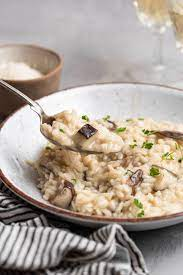

Mushroom Risotto

Description
Mushroom risotto is a creamy Italian rice with chicken broth and your favorite mushrooms. You can make it on the stovetop with a little patience and meditative stirring.
You can’t make risotto with any old rice. The high starch content of risotto rices creates that creamy texture when cooked.
Ingredients
- 2 tablespoons butter
- 2 cups flavorful mushrooms (such as shiitake, chanterelle, or oyster), cleaned, trimmed, and cut into 1/2- to 1-inch pieces
- 2/3 cup brandy, vermouth, or dry white wine
- 5 to 6 cups chicken stock (use vegetable stock for vegetarian option)
- 1/3 cup shallots
- 1 3/4 cups risotto rice
- 1/3 cup freshly grated Parmesan cheese
- Salt and freshly ground black pepper, to taste
- 2 tablespoons fresh parsley or chives
Steps
- Bring stock to a simmer in a saucepan.
- Melt the butter in a wide saucepan over medium-high heat. Add the mushrooms and shallots and sauté about 5 minutes (if using chanterelles, dry sauté first for a minute or two, and let the mushrooms cook in their own juices before adding the butter).
- Add the rice and stir to combine. Add brandy, bring to a boil, and reduce liquid by half, about 3 to 4 minutes.
- Add 1/2 cup of stock at a time, stirring enough to keep the rice from sticking to the edges of the pan. Stir the rice almost constantly — stirring sloughs off the starch from the rice, making the creamy sauce you're looking for in a risotto.
Wait until the stock is almost completely absorbed before adding the next 1/2 cup.
This process will take about 25 minutes. The rice should be just cooked and slightly chewy.
- Stir in the Parmesan cheese, and season to taste with salt and pepper. Garnish with chopped fresh parsley or chives.